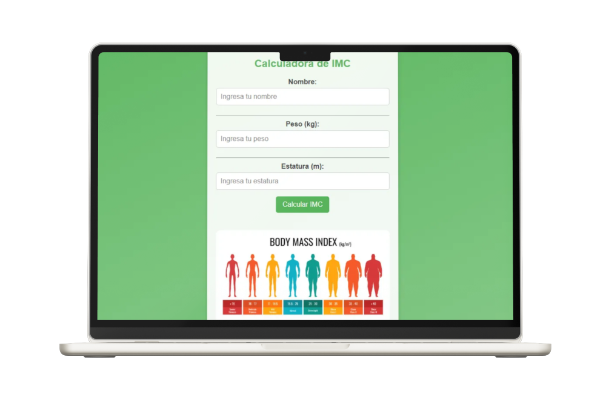

HTML
Es el lenguaje de marcado que estructura y define el contenido de una página web.


Este proyecto es una calculadora de Índice de Masa Corporal (IMC) desarrollada utilizando únicamente HTML, CSS puro y JavaScript. La aplicación es sencilla, interactiva y funcional, diseñada para que el usuario pueda calcular su IMC de manera rápida y entender en qué rango de salud se encuentra según su peso y altura.
Tecnologias
Es el lenguaje de marcado que estructura y define el contenido de una página web.
CSS es el lenguaje que se encarga de la apariencia y el diseño de una página web.
Lógica para realizar los cálculos del IMC, validaciones de entrada y actualización.
Caracteristicas
El proyecto IMC tiene una interfaz simple y clara que facilita el cálculo y visualización del índice de masa corporal.
El sitio está optimizado para dispositivos de escritorio, garantizando una navegación fluida y un diseño adaptado a pantallas grandes.